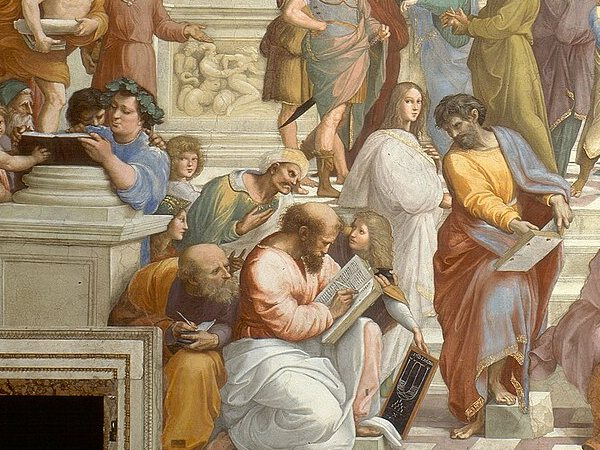
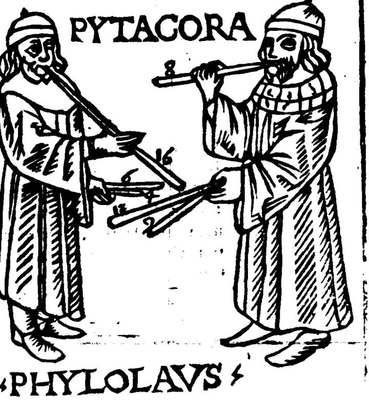
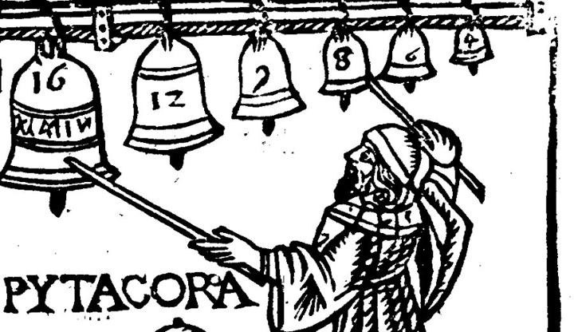

Comparing Fractions with Like Numerators
Dimensions Math 3B, Chapter 9, Lesson 4 · Comparing Fractions with Like Numerators

Ancient Greece · more than 2,500 years ago
When two fractions have the same numerator, how can you tell which one is greater?
Same number of parts, but not the same size. Fewer parts in the whole means bigger parts.
You will…
- Compare unit fractions: more equal parts in the whole makes each part smaller.
- Compare two fractions with the same numerator by looking at the size of the parts.
- Write <, > or =, and order three fractions from least to greatest.
Pipes and bells
Two more pictures from the music book printed in Italy in 1492, almost 2,000 years after Pythagoras. The pictures were carved in wood and then printed. Stories say Pythagoras tested sounds with pipes and with bells. On the left, Pythagoras and his student Philolaus blow pipes of different lengths. On the right, Pythagoras taps a row of bells, from big to small.


Today's math: when you cut the same pipe into more equal pieces, each piece is shorter. A shorter piece whistles higher, and it is a smaller fraction of the pipe.
To divide, think of the times fact. 54 ÷ 6: what times 6 makes 54? 9 × 6 = 54, so 54 ÷ 6 = 9. Type each answer, then check. You can fix any answer and check again.
One equal part
Two ribbons. Each ribbon is cut into equal parts, and one part is shaded. A fraction with 1 on top names one equal part. The bottom number tells how many equal parts make the whole ribbon.
Think: Pythagoras' Pipes
🔨 Do · listenTwo bronze pipes of the same length. Each pipe has a ✂ button that cuts it into one more equal piece. The first piece of each pipe has a light edge, and the fraction under it names that piece. Tap a piece to blow it.
Cut the top pipe into 9 equal pieces
Press ✂ Cut one more piece next to the top pipe until it says 9 equal pieces.
Cut the bottom pipe into 12 equal pieces
Press ✂ Cut one more piece next to the bottom pipe until it says 12 equal pieces.
Blow one piece of each pipe
Tap the first piece of the top pipe. Then tap the first piece of the bottom pipe. Listen for the higher note.
Which piece is greater?
More pieces, smaller pieces. One-ninth is longer than one-twelfth: 19 > 112.
Same numerator? Look at the size of the parts.
One whole cut into 10 parts, and one whole cut into 12 parts. More parts make smaller parts, so 110 > 112.
510 > 512 five-tenths is greater than five-twelfths
- Same whole? Only compare fractions of the same whole: two strips, pipes or lines that are the same length.
- Same numerator? Then you have the same number of parts. Now look at the size of the parts.
- Look at the denominators. The denominator tells how many equal parts make the whole. More parts means smaller parts. Twelve is more than ten, but twelfths are smaller than tenths.
- Write it. The open side of < or > faces the greater fraction. To order three, start with the smallest parts: 512, 510, 59.
Four ways to see five-tenths and five-twelfths
Your Turn: Seven Ninths or Seven Twelfths?
🔨 DoPythagoras painted 7 pieces of a pipe cut into ninths, and 7 pieces of the same size pipe cut into twelfths. Which painted part is greater?
Fraction tiles: the navy bar is 1 whole. Under it is a bar of ninths and a bar of twelfths. Then there is a box for a symbol between the two fractions.
Shade 7 tiles in the ninths bar
Tap the 7th tile in the ninths bar, or drag along the bar until 7 tiles are shaded.
Shade 7 tiles in the twelfths bar
Tap the 7th tile in the twelfths bar, or drag along it until 7 tiles are shaded.
Which tiles are bigger?
Drag the symbol that makes it true
Drag <, > or = into the box between 79 and 712.
Ava's Big Number
🔨 Do · ✏️ WriteAva compared one-eleventh and one-ninth. She said, "11 is more than 9, so one-eleventh is more." She wrote: 111 > 19.
Fraction tiles: a bar of elevenths and a bar of ninths under 1 whole. Then Ava's comparison. Her symbol is in the box, marked "Ava's".
Shade one tile in each bar
Tap the first tile in the elevenths bar. Then tap the first tile in the ninths bar.
Which tile is bigger?
Fix Ava's symbol
Drag a new symbol into the box. The open side must face the bigger fraction.
Help Ava
Noah's Same Numerator
🔨 Do · ✏️ WriteNoah says four-fifths and four-tenths are equal, because both are 4 parts. Pythagoras has two strings of the same length: one marked in fifths, one marked in tenths. Let's listen.
Two strings of the same length. The light dots on the top box show fifths. The light dots on the bottom box show tenths. Each string has a bridge. The gold part, from the start to the bridge, is the part you pluck.
Slide the top bridge to four-fifths
Drag the top bridge to the right until the fraction under it says 45.
Slide the bottom bridge to four-tenths
Drag the bottom bridge until the fraction under it says 410.
Pluck both gold parts
Tap the gold part of the top string. Then tap the gold part of the bottom string. Do they sing the same note?
What did you hear?
Fix Noah's symbol
Noah put = in the box. Drag the symbol that makes it true.
Fix Noah's thinking
The Climbing Notes
🔨 Do · listenPythagoras has one pipe, already cut into 9 equal pieces. He blows one piece. Then he cuts the same pipe into one more piece and blows again. What happens to the note?
One bronze pipe with a ✂ button, and a row of lines that shows each note you hear, from low to high. Below it are three fraction cards and three boxes, from least on the left to greatest on the right.
Blow, cut, blow again
Tap the first piece to blow it. Then press ✂ Cut one more piece and blow the first piece again. Keep going until the pipe has 12 pieces and you have heard 4 notes.
What happened?
Order the three cards
Drag the three cards into the boxes, from least to greatest. You can also tap a card, then tap a box.
Play the tune
Press 🔊 Play the tune. From least to greatest, each piece is longer, so the notes step down.
Long Jumps, Short Jumps
🔨 DoTwo builder's rods are each 1 meter long. One is marked in sevenths. The other is marked in twelfths. One mark is at three-sevenths, and the other is at three-twelfths. Which mark is farther from the start?
Two number lines from 0 to 1, the same length, like the two rods. The top line is cut into sevenths and the bottom line into twelfths. Under them is a box for a symbol.
Put the top dot on three-sevenths
Drag the red dot on the top line 3 jumps from 0. You can also tap a mark.
Put the bottom dot on three-twelfths
Drag the red dot on the bottom line 3 jumps from 0.
Drag the symbol that makes it true
Drag <, > or = into the box between 37 and 312.
Long jumps or short jumps?
Ninths or Elevenths?
🔨 Do · ✏️ WriteA bar of ninths and a bar of elevenths under 1 whole, and a box for a symbol.
Problem 1 · Shade
Shade 4 tiles in the ninths bar and 4 tiles in the elevenths bar. Sketch both bars in your math journal too.
Problem 1 · Compare
Drag the symbol that makes it true.
Problem 2 · Explain
Show What You Know: Order and Play
🔨 Do · ✏️ WriteThree pipes of the same length are cut into eighths, elevenths and ninths. Pythagoras painted 6 pieces of each: six-eighths, six-elevenths and six-ninths.
Problem 3 · Order
Drag the three cards into the boxes, from least to greatest.
Problem 3 · Play it
Press 🔊 Play the tune. The notes should step down.
Prove It
Find a Denominator
Write a denominator from 10 to 12 that makes this true: the fraction is less than 49.
Turn in your work
- Check the list below. Jobs 1 to 8 are required. The Bonus is optional.
- Press 📋 Gather my answers, then 📋 Copy. Or press 🖨️ Print or save as PDF.
- Open this lesson's assignment in Canvas.
- Paste your answers (or upload your PDF and journal photo), then press Submit.
All my answers
Your answers and your work on this page save on this device as you go.
Before you turn in
- I finished Jobs 1 to 8.
- I sketched my ninths bar and elevenths bar in my math journal and wrote the symbol.
- I wrote my Prove It.
- I tried the Bonus. (optional)
Unit 9 Summative, then Lesson 3.10.01 · Equivalent Fractions
You can now compare fractions two ways: when the denominators match, count the parts, and when the numerators match, look at the size of the parts. Next comes the Unit 9 check. Then, in Unit 10, we find fractions that look different but name the same amount.
Bach · Nun komm, der Heiden Heiland
Written about 300 years ago, for the organ. About 4½ minutes.
Johann Sebastian Bach, chorale prelude Nun komm, der Heiden Heiland, BWV 659, played on the organ. Public-domain recording, Wikimedia Commons.